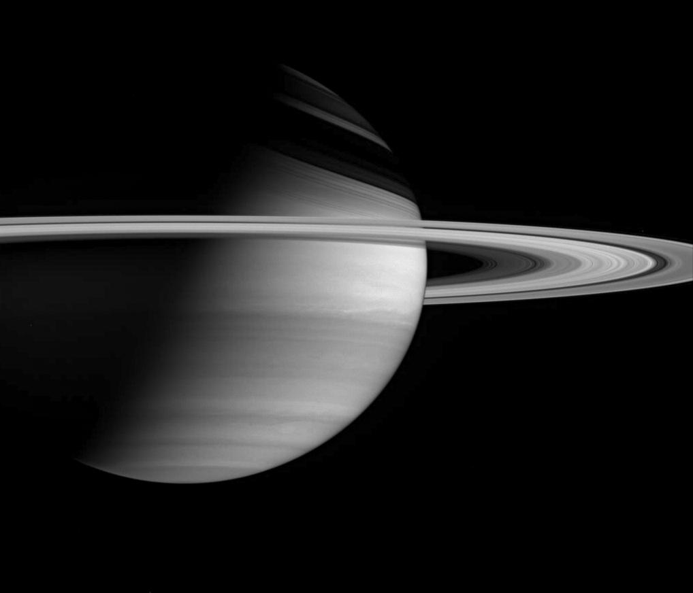
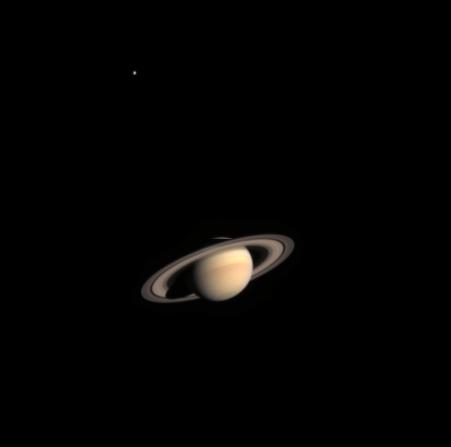

Ogólne informacje
Saturn to wielkością podobna planeta do Jowisza i jak Jowisz jest "gazowym gigantem". Jest znany ze swojego pierścienia. Jego promień wynosi 58232km. Jedna orbita wokół Słońca zajmuje Saturnowi 29 Ziemskich lat a wokół własnej osi 10.7 Ziemskich godzin.

